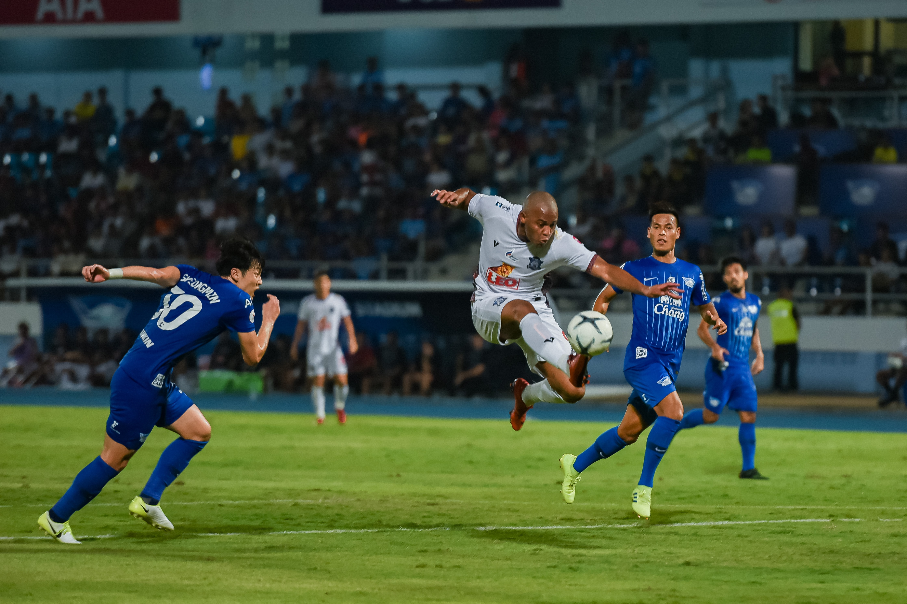
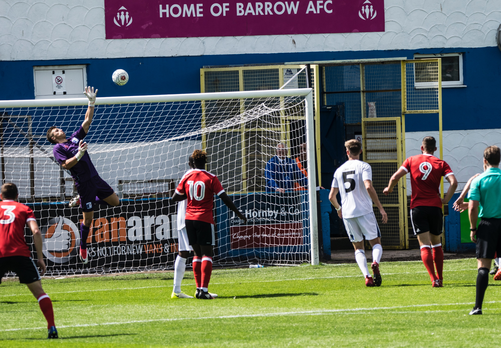

Association football, more commonly known as football or soccer, is a team sport played between two teams of 11 players who primarily use their feet to propel a ball around a rectangular field called a pitch. The objective of the game is to score more goals than the opposite team by moving the ball beyond the goal line into a rectangular-framed goal defended by the opposing side. Traditionally, the game has been played over two 45 minute halves, for a total match time of 90 minutes. With an estimated 250 million players active in over 200 countries and territories, it is considered the world's most popular sport.

The game of association football is played in accordance with the Laws of the Game, a set of rules that has been in effect since 1863 and maintained by the International Football Association Board since 1886. The game is played with a football that is 68-70 cm (27-28 in) in circumference. The two teams compete to get the ball into the other team's goal (between the posts and under the bar), thereby scoring a goal. When the ball is in play, the players mainly use their feet, but may use any other part of their body, except for their hands or arms, to control, strike, or pass the ball. Only the goalkeepers may use their hands and arms, and only then within the penalty area. The team that has scored more goals at the end of the game is the winner. Depending on the format of the competition, an equal number of goals scored may result in a draw being declared, or the game goes into extra time or a penalty shootout.

Internationally, association football is governed by FIFA. Under FIFA, there are six continental confederations: AFC, CAF, CONCACAF, CONMEBOL, OFC and UEFA. National associations (e.g. The FA or JFA) are responsible for managing the game in their own countries both professionally and at an amateur level, and coordinating competitions in accordance with the Laws of the Game. The most senior and prestigious international competitions are the FIFA World Cup and the FIFA Women's World Cup. The men's World Cup is the most-viewed sporting event in the world, surpassing the Olympic Games. The two most prestigious competitions in European club football are the UEFA Champions League and the UEFA Women's Champions League, which attract an extensive television audience throughout the world. The final of the men's tournament has been, in recent years, the most-watched annual sporting event in the world.
Women's association football has historically seen opposition, with national associations severely curbing its development and several outlawing it completely. Restrictions started to be reduced in the 1970s and the first official women's World Cup[b] was the 1991 FIFA Women's World Cup in China with only 12 teams from the respective six confederations. By the 2019 FIFA Women's World Cup in France, this had increased to 24 national teams, and a record-breaking 1.12 billion viewers watched the competition.